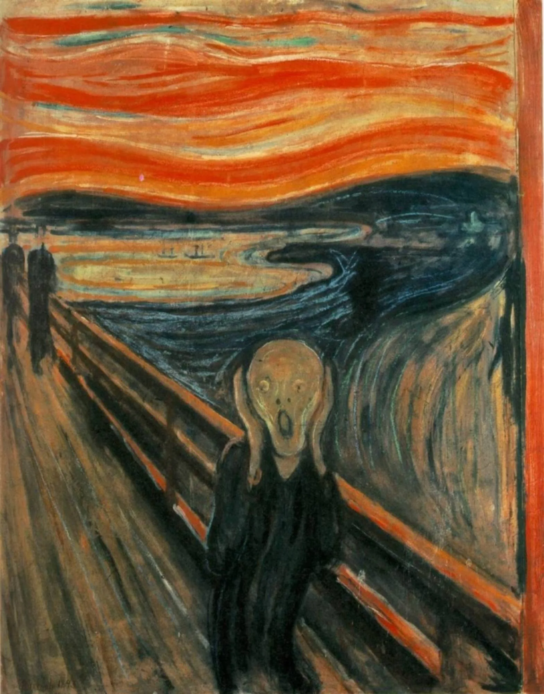
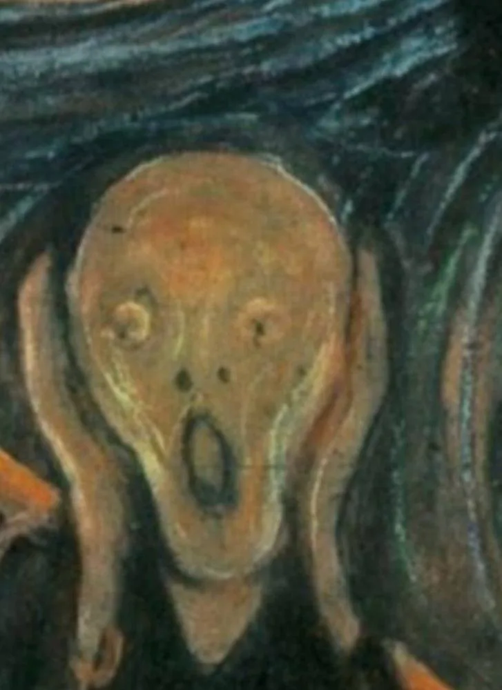
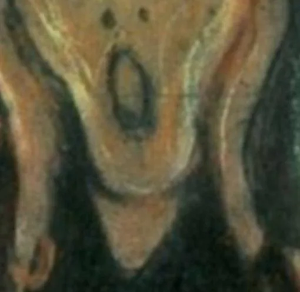
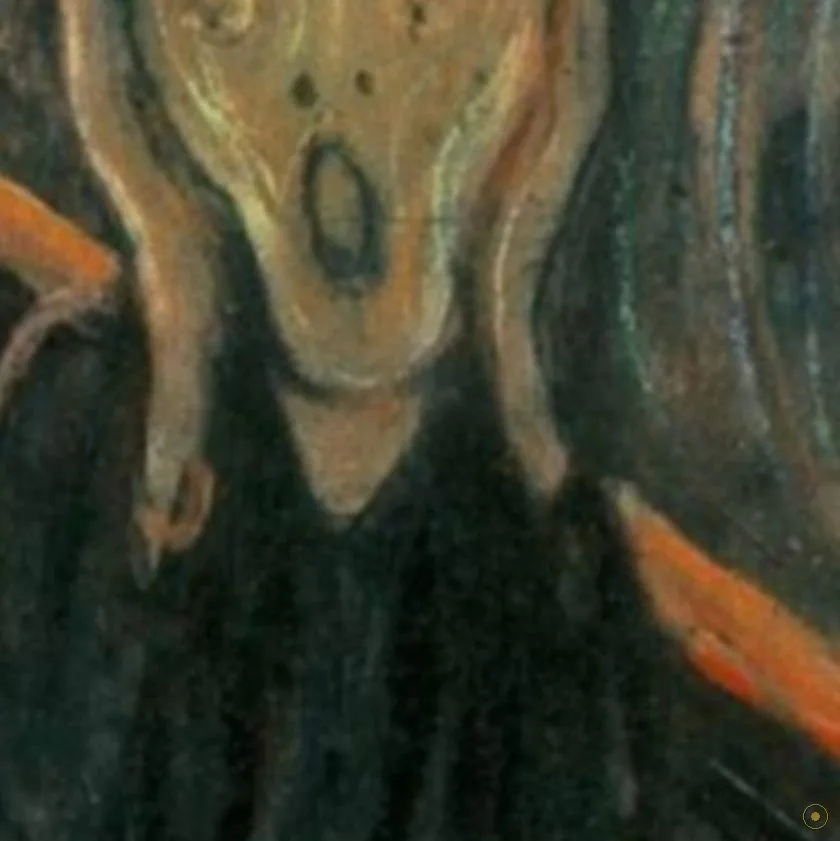
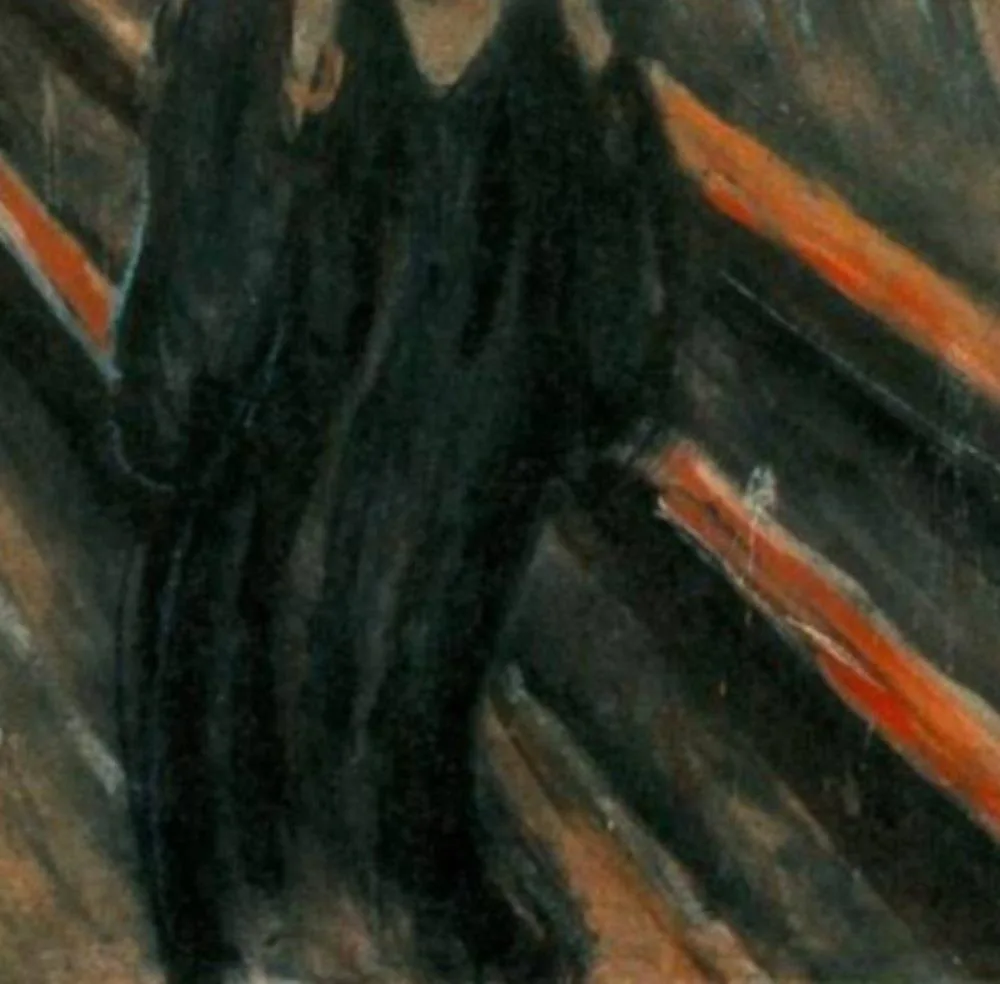
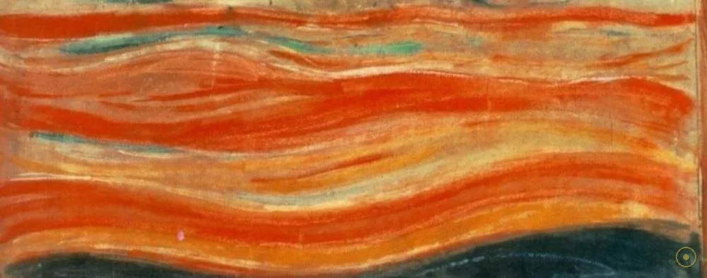
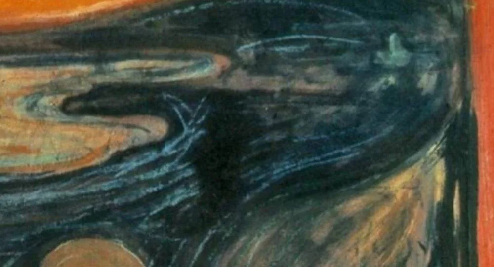
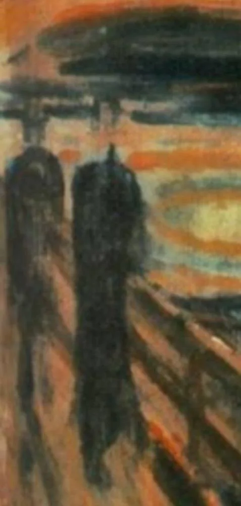
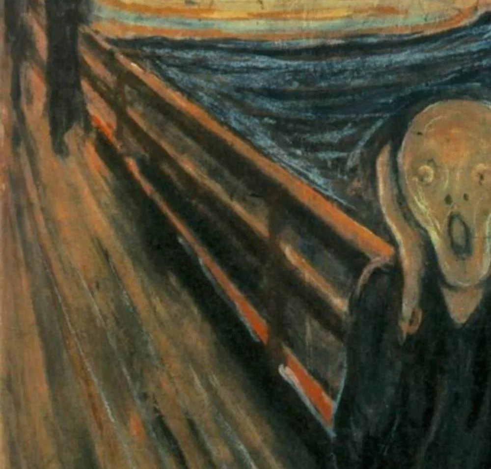

「我和两个朋友在街上走着——太阳落山了——天空突然变成血红色——我停下来，靠在栏杆上，疲惫得要死……我的朋友们继续走着，我站在那里，因焦虑而颤抖——我听到大自然中一声无尽的尖叫，穿过我。」
这是蒙克写在 1892 年 1 月 22 日日记里的一段话。三年后，它变成了这幅画：一个小小的人形站在埃克伯格山路的桥上，双手捂着耳朵，脸融成一团火焰般的波纹——所有人都「看见」他在喊，蒙克却说他是在听。
那条路真实存在：奥斯陆城东的埃克伯格（Ekeberg），可以俯瞰整个奥斯陆峡湾。山脚下有屠宰场，还有当时的精神病院——蒙克的妹妹劳拉，就住在那里面。走在这条路上的人，听得见从山下飘上来的声音。
这幅画几乎不「描绘」什么：没有清晰的轮廓，没有坚固的地面，人、栏杆、峡湾、天空全被同一股波浪状的笔触卷在一起。它画下的不是一场风景，而是一次身体反应。
—— 蒙克日记 · 1892 年 1 月 22 日（通译本节录）
画里的那个人没有喊。喊的是整个自然，而他刚好站在中间。
画面只有四个人、一条桥、一片峡湾和一片天。但每一处都被后来的研究者拆开来读过——包括天空为什么是红的。

点击画面中的 ✦ 光点 查看画面细节 · 图片来源：Wikimedia Commons（公有领域）
从日记到纸板只用了不到两年，但它不是一幅画，而是一个系列的高潮——蒙克把同一场黄昏画了四遍，还刻进了石版。
1892.1.22 · 奥斯陆（克里斯蒂安尼亚）
傍晚沿埃克伯格山路回家，蒙克在栏杆边停下，写下那段著名的文字。同一时期他正在筹备柏林的个展—— «生命组曲»（Frieze of Life）的草图一批批画着：病、死、爱、焦虑，全是他自己家里的题材。
➤1893 · 画室
这版《呐喊》画的不是布面油画，而是一块未装框的厚纸板：油彩、蛋彩和蜡笔混合使用，颜料有时在玻璃上磨开再抹上画面，底稿线条多处裸露。同年他还画了蜡笔版本，并制成石版画——尖叫开始被复制。
➤1895–1910 · 四个版本
1893 蛋彩版今藏挪威国家美术馆；1893 蜡笔版与约 1910 蛋彩版藏蒙克博物馆；1895 年的粉彩蜡笔版是唯一私人收藏——2012 年在苏富比拍出 1.199 亿美元，创当时艺术品拍卖纪录。四个版本细节各有出入，像同一场噩梦的四次醒来。

真事一 · 「只有疯子画得出」是蒙克自己写的。约 1910 版的下缘有一行细小的刮痕文字。2021 年红外检测确认笔迹属于蒙克本人——多半是他对批评的回应：把它亲手刻在自己的画上，像一枚挑衅的签名。
真事二 · 它被偷过两次。1994 年利勒哈默尔冬奥会开幕当天，窃贼从国家美术馆用梯子翻窗，90 秒带走蛋彩版，三个月后追回；2004 年两名持枪者光天化日从蒙克博物馆抢走另一版，2006 年找回时画框受损、画面留痕——修复后再次展出。
真事三 · 这幅画正在「生病」。纸板底材、可溶性蜡笔与裸露的底稿让它对湿度极其敏感，颜料存在剥落风险。两幅馆藏版本如今都在严格控制环境的展厅里——「世界上最焦虑的画」，也是最需要安静保存的画之一。
※ 失窃与红外检测结论依据挪威国家美术馆 / 蒙克博物馆公开发布与媒体公开报道；拍卖价格出自苏富比 2012 年 5 月纽约拍卖纪录。
画面里没有一样东西是静止的：直线只留给栏杆和路人，其余一切都在波纹里。
两个洞、一个洞、一团波纹——人类面孔的最小值，恐惧的最大值。

全画的引力中心：栏杆、身体与风景全部朝它汇聚。

他不是在喊，是在躲——蒙克《绝望》《焦虑》里同款姿势。

躯干与桥板、水波同一笔触，一个人正在被震动带走。

喀拉喀托火山灰可能真的染红过挪威天空——但点火的是蒙克自己。

水波复写天波：风景与内心共用一套笔触。

全世界都在波动，只有他们笔直——他们听不见那声尖叫。

日记里写了它：全画唯一的直线系统，把人隔在深渊边上。
蒙克画《呐喊》时，德国表现主义团体「桥社」「蓝骑士」的成员还是孩子。1910 年代他们把这幅画奉为原型：画不再描摹世界，而是直接输出神经。一块 1893 年的纸板，成了整个 20 世纪表现主义的方向牌。
《呐喊》属于蒙克跨越三十年的系列创作 «生命组曲»（Frieze of Life）：病榻、吻、 Puberty、焦虑——素材全部来自他自己的家史：母亲与姐姐苏菲先后死于肺结核，妹妹劳拉患精神分裂症。他说过：「病魔、疯狂与死亡，是守在我摇篮边的黑色天使。」
它是史上被盗次数最多的名画之一（1994、2004 两次）。2012 年，唯一私人收藏的 1895 粉彩版在纽约苏富比以 1.199 亿美元成交，创当时艺术品拍卖的世界纪录——买家用十二分钟，为人类共同的不安标了价。
因为形象太抽象又太精准，它成了「崩溃」的世界通用语：恐怖片鬼脸面具、表情符号 😱、《小鬼当家》的定格、《小丑》(2019) 的海报与寓言——一部 1893 年的纸板画，至今仍在给每一代人的恐慌提供模板。
日记写下那段文字——「天空突然变成血红色」。三年后它成为画面。
蛋彩首版完成，同年蜡笔版与石版画问世；«生命组曲» 在柏林展出时恶评如潮，也让他一夜成名。
德国表现主义者把它奉为原型；此后一个世纪的现代绘画，很多都站在这条栏杆上。
1895 粉彩版拍出 1.199 亿美元；「只有疯子画得出」的刮痕在 2021 年被红外检测确认为蒙克本人手迹。
它同时是一幅国家级文物和一枚表情符号——艺术史里没有第二件作品，把「恐慌」注册成了全人类的视觉词汇。